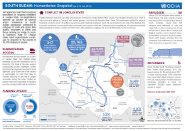

South Sudan/Sudan: "Until the war ends, South Sudan is the best place for my kids to grow up."
The roar of Antonov aircraft would often fill the skies above Um Duluk village in Sudan’s border region of South Kordofan, says Affat. For her, the sound was a warning that she needed to gather her eight children and flee to the safety of nearby foothills where they would wait out the bombing that would often follow.
“I have children that I need to take care of,” Affat says. “How can I do that when the bombs keep falling? I need to make sure my children are safe, so we would run to the rocks in the hills.”
Affat and her children would seek shelter in caves. Once the aircraft left, she would leave her children hidden and return to the village to collect food and other belongings. Sometimes they would have to stay out of sight for days at a time.
The conflict in South Kordofan broke out between Sudanese Armed Forces and the Sudan People’s Liberation Movement – North in June 2011, around the time that South Sudan seceded from Sudan. Since then, nearly 1 million people in the region have been displaced or severely affected by fighting. Approximately 74,000 people from South Kordofan have sought refuge across the border in Yida, South Sudan’s largest refugee settlement.
In May last year, Affat decided to make the long trek to South Sudan and join those already in Yida. “I was tired of living in fear,” she says. “The bombing had already frightened away the teachers and we had no chance to farm, so there was nothing keeping us in Um Duluk.”
Local capacity overwhelmed
Sudanese refugees began arriving in Yida in South Sudan’s Unity state in October 2011. Back then, it was a small hamlet of only 1,800 people. The new arrivals quickly overwhelmed local capacity to provide sufficient clean water, sanitation and food. In those early months, aid agencies struggled to keep up as the rate of arrivals steadily increased. In May and June 2012, up to 1,000 people were arriving in Yida every day, sick and hungry after having travelled for many days, often on foot.
Since then, the situation has stabilized, mainly thanks to the work of the 11 NGOs and UN agencies working in Yida. Deaths from respiratory tract infections, waterborne diseases and malnutrition have dropped sharply due to food distributions, improved sanitation and water supply, and education campaigns designed to prevent the spread of illnesses.
Weekly admissions at the hospital are down from 600 per month at the start of 2013 to 200 per month, and the rate of global acute malnutrition is 1 per cent, which is well below the World Health Organization’s emergency threshold of 15 per cent.
“Things in Yida are certainly much better now than they were six months ago,” explains Cleophas Mubangizi, head of the UN Refugee Agency’s (UNHCR) Yida office.
“We have seen a lot of progress on public health, with aid workers going into communities to build latrines, distribute mosquito nets, and encourage pregnant women to go for check-ups and give birth at the clinic.”
However, Mubangizi admits that the challenge now is to sustain these achievements. Despite the successes of humanitarian agencies working in Yida, funding for their efforts has been difficult to secure. This year, as part of their US$1.05 billion revised annual humanitarian appeal, aid organizations in South Sudan have called for $259 million to assist refugees and returnees across the country. So far, only $46 million has been received.
“We hope donors will recognize that humanitarian organizations in Yida need long-term funding to get refugees the help they need,” Mubangizi says.
Seeking sustainable solutions for Yida’s displaced
About 50 new refugees arrive in Yida every week. The slowdown in arrivals allows aid organizations to focus on finding more sustainable ways to meet refugees’ needs. Easing congestion in Yida is a top priority.
A new camp, Ajoung Thok, opened in March to allow refugees to settle in safer and more sustainable conditions. Each family in Ajoung Thok is allocated 400 m2 of land, materials to build homes that are more durable than those in Yida, and seeds and tools to grow crops. All new arrivals to Yida are encouraged to settle in Ajoung Thok.
So far, over 3,000 refugees have made the move. One of the main drivers is access to education: Ajoung Thok has a primary and a secondary school, with nearly 1,600 students enrolled so far.
“People from the Nuba mountains place a very high value on education,” explains Jan Kroyer, team leader for Lutheran World Federation, which runs the two schools in Ajoung Thok. “When a convoy of refugees arrives from Yida, the children will be in school the next morning.”
But despite the opportunities available in the new camp, most of the refugees want to return home. “If the war stopped and if schools and clinics re-opened in Um Duluk, I would return the next day,” Affat says. “Until then, my children and I have a better life here in South Sudan.”

{kind=link}